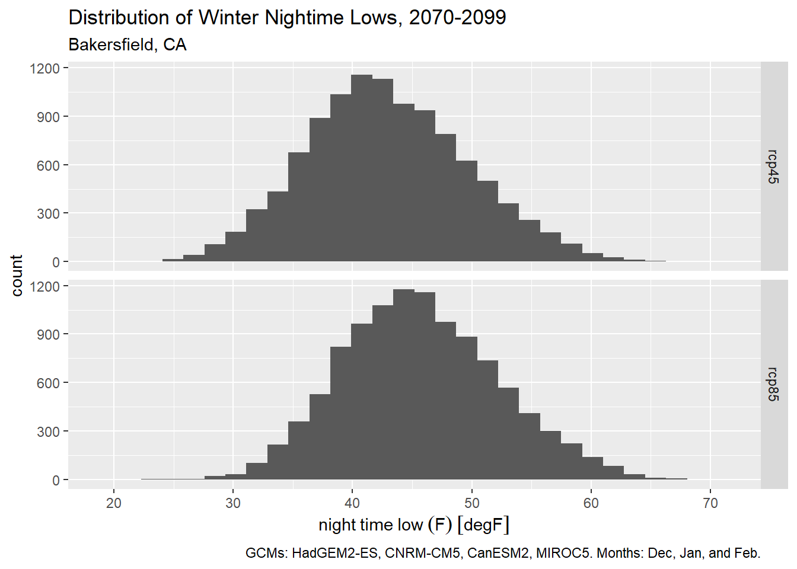
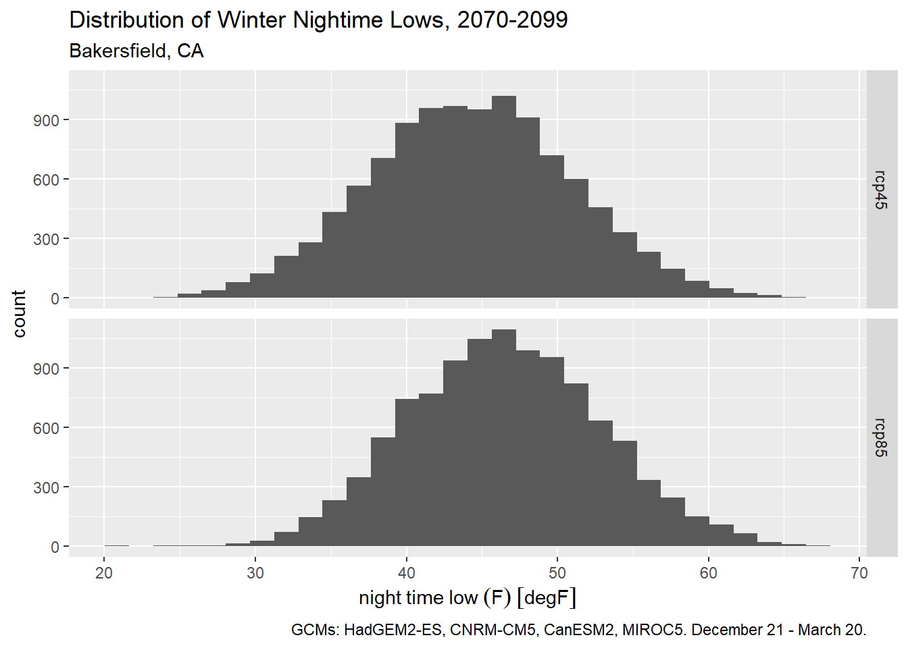
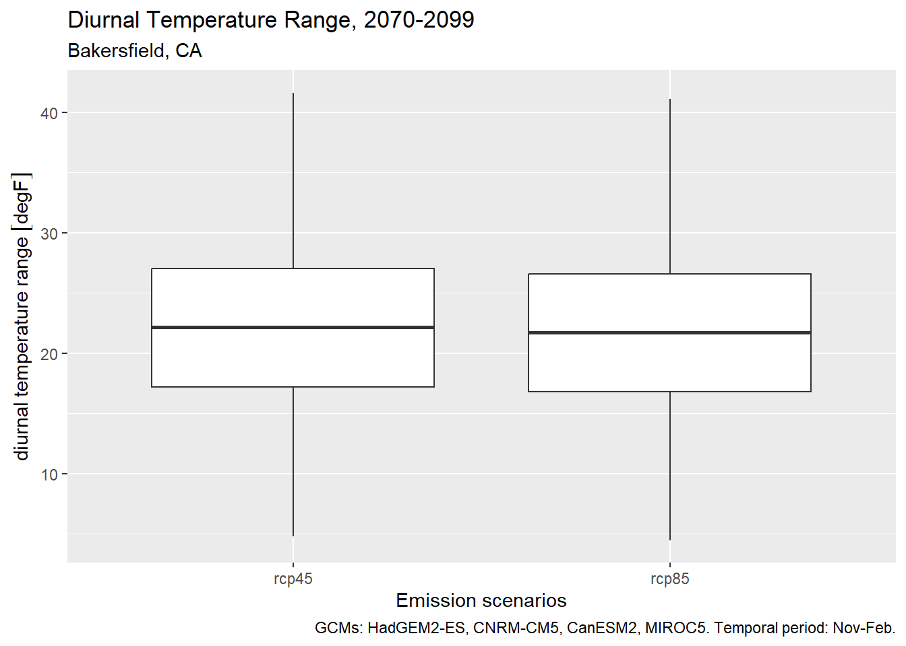

library(ggplot2)
library(dplyr)
library(tidyr)
library(lubridate)
# MOVE THESE BELOW
library(caladaptr)
library(units)
library(sf)1 Data Wrangling Methods
In this Chapter, we’ll explore some commonly used data wrangling techniques when working with weather data and computing climate metrics.
1.1 Load packages
The tidyverse provides some generically useful packages for data wrangling.
As usual, start by loading a bunch of packages into memory and specifying our package preferences for conflicting function names:
We’ll be using functions from dplyr quite a bit. Unfortunately some of the functions from dplyr clash with functions with the same name from other packages. For example several packages have a function called select().
An easy way to avoid function name clashes is to use the conflicted package to specify your preferences when commonly named functions are called. Typically you do this at the top of your script, so you don’t have to worry about it after that.
library(conflicted)
conflict_prefer("filter", "dplyr", quiet = TRUE)
conflict_prefer("count", "dplyr", quiet = TRUE)
conflict_prefer("select", "dplyr", quiet = TRUE)
1.2 Fetch Some Sample Data
THIS SECTION WILL EITHER GO OUT ENTIRELY (MOVED TO THE CHAPTER ON IMPORTING CLIMATE DATA), OR BE REPLACED WITH A SIMPLE IMPORT CSV FILE
For the examples in this chapter, we’ll work with late-century daily temperature data for a location near Bakersfield, CA in the southern San Joaquin Valley.
bkrfld_cap <- ca_loc_pt(coords = c(-119.151062, 35.261321)) |>
ca_gcm(gcms[1:4]) |>
ca_scenario(c("rcp45", "rcp85")) |>
ca_period("day") |>
ca_years(start = 2070, end = 2099) |>
ca_cvar(c("tasmin", "tasmax"))
bkrfld_cap |> ca_preflight()General issues
- none found
Issues for querying values
- none found
Issues for downloading rasters
- none foundplot(bkrfld_cap)
Fetch data:
bkrfld_tbl <- bkrfld_cap |>
ca_getvals_tbl(quiet = TRUE) |>
mutate(dt = as.Date(dt),
temp_f = units::set_units(val, degF))
head(bkrfld_tbl)# A tibble: 6 × 9
id cvar period gcm scenario spag dt val temp_f
<int> <fct> <fct> <fct> <fct> <fct> <date> [K] [degF]
1 1 tasmin day HadGEM2-ES rcp45 none 2070-01-01 278. 41.1
2 1 tasmin day HadGEM2-ES rcp45 none 2070-01-02 278. 40.6
3 1 tasmin day HadGEM2-ES rcp45 none 2070-01-03 284. 51.7
4 1 tasmin day HadGEM2-ES rcp45 none 2070-01-04 276. 37.6
5 1 tasmin day HadGEM2-ES rcp45 none 2070-01-05 280. 45.0
6 1 tasmin day HadGEM2-ES rcp45 none 2070-01-06 280. 44.5
1.3 Working with Date and Time Data (CHLOE)
This is really important. As part of importing weather data, you often have to do some wrangling with date and time columns. The goals are to
Date columns should be converted to R Date class
Date-time columns should be saved as POSIXct objects
1.3.1 Converting Character Date and Time Columns
Dates and time are often encoded as characters data types. So you have to convert them to R objects. Although this may seem like a pain in the arse, it will save you a lot of pain and suffering.
lubridate is your friend.
Show them all the lubridate functions. (see Lubridate cheatsheet)
1.3.2 Combining Separate Date and Time Part Columns
Show code here. Concatenate date part fields with lubridate::make_date() and lubridate::make_datetime()
Could use CIMIS data as an example (which has columns for ‘month’, ‘year’, and ‘day’)
1.3.3 Converting Time Zones
Pretty common to get datetimes values in UTC.
Note there’s a difference between assigning time zones and converting POSIXct objects to different time zones.
“Pacific Time”, “PST”, “PDT”, etc. are not recognized time zone names. To see a list of recognized time zone values, you can run:
OlsonNames() (there’s also a lubridate function that does the same thing)
lubridate::ymd_hms(x, tz = “America/Los_Angeles”)
## this will
## i) convert x (a character object) to POSIXct. If ‘x’ doesn’t have the time zone represented it will assign the local time zone
## 2) becase we provided tz, it will then convert (add or subtract) the time value to make it Pacific time
## 3) assign Pacific Time to the result
This assigns a time zone, but does not change the value: as.POSIXct(dt, tz=“Africa/Johannesburg”)
1.3.4 Saving Date and Time Data Locally
If you need to save your weather data to disk, use a format that knows how to save dates and times (e.g., geopackage, native R data file).
If you need to save it in a text format (e.g., csv) or as spreadsheet (e.g., xlsx, Google Sheet), use lubridate::format_ISO8601() to write, and lubridate::ymd_hms() to bring it back in.
1.4 Units
Show them the units package
How to convert between F, C, and K
1.5 Going from Long to Wide
This is very common. Most tidyverse packages are designed to work with “long” data, but sometimes you have to convert it to wide to feed into another package, compute a metric based on column arithmetic
Use tidyr
Example: CIMIS Data is long, convert to wide
1.6 Time Lumping
going from hourly to daily data
1.7 Time Filtering and Slicing
changing how we slice and dice time
in both cases, it is useful to construct date parts
Often an analysis requires you to slice climate data into specific periods that are meaningful for a specific study. For example, water years start on October 1 and run through the following season. Or you might just be interested in the winter months, when tree crops or bugs are particularly sensitive to temperatures. In this section, we’ll look at different techniques for time-slicing climate data.
The general approach is to add a column in the table that identifies the time slice. (If you’re working with rasters, the idea is similar but you add an attribute value to the layer). Once you have the time-slice identifiers in your table, you can easily filter or group on that column to compute summaries for each time-slice.
lubridate is your ally when it comes to extracting date parts. For example to add columns for date parts like year, month, week, and ordinal date, we can use the standard mutate() with date part functions from lubridate:
bkrfld_dtprts_tbl <- bkrfld_tbl |>
mutate(year = lubridate::year(dt),
month = lubridate::month(dt),
week = lubridate::week(dt),
yday = lubridate::yday(dt)) |>
select(dt, year, month, week, yday, cvar, gcm, scenario, temp_f)
bkrfld_dtprts_tbl |> slice(1:20)
To plot the distribution of winter time daily minimum temperatures (i.e., to identify frost days), we could use the month column to get only dates in December, January, and February:
bkrfld_wintrmth_lows_tbl <- bkrfld_dtprts_tbl |>
filter(cvar == "tasmin", month %in% c(12, 1, 2))
table(bkrfld_wintrmth_lows_tbl$month)
1 2 12
7440 6776 7440
Plot histogram:
ggplot(bkrfld_wintrmth_lows_tbl, aes(x=temp_f)) +
geom_histogram() +
facet_grid(scenario ~ .) +
labs(title = "Distribution of Winter Nightime Lows, 2070-2099",
subtitle = "Bakersfield, CA",
caption = paste0("GCMs: ", paste(gcms[1:4], collapse = ", "), ". Months: Dec, Jan, and Feb."),
x = "night time low (F)", y = "count")`stat_bin()` using `bins = 30`. Pick better value with `binwidth`.
If we want use the standard definition of the winter season, we could alternately filter winter days by their ordinal date number (aka Julian date). Winter starts on December 21 (day 355 of non-leap years) and ends on March 20 (day 79).
bkrfld_wintrssn_tbl <- bkrfld_dtprts_tbl |>
filter(cvar == "tasmin", yday >= 355 | yday <= 79)
ggplot(bkrfld_wintrssn_tbl, aes(x=temp_f)) +
geom_histogram() +
facet_grid(scenario ~ .) +
labs(title = "Distribution of Winter Nightime Lows, 2070-2099",
subtitle = "Bakersfield, CA",
caption = paste0("GCMs: ", paste(gcms[1:4], collapse = ", "), ". December 21 - March 20."),
x = "night time low (F)", y = "count")`stat_bin()` using `bins = 30`. Pick better value with `binwidth`.
Time slices can also be used for grouping. The following expression computes the average nightly low for the summer months for each RCP (all GCMs and years combined):
bkrfld_dtprts_tbl |>
filter(month %in% 6:8, cvar == "tasmin") |>
group_by(month, scenario) |>
summarise(avg_temp = mean(temp_f), .groups = "drop") |>
mutate(month = month.name[month]) |>
tidyr::pivot_wider(id_cols = month, names_from = scenario, values_from = avg_temp)
Sometimes the time period of interest spans two calendar years. A water year for example starts on October 1 and goes thru the end of September the following year. Some agricultural periods (such as winter dormancy) may also start in the fall and continue into the new year.
Slicing your data by a time period that spans calendar years is done in the same manner - you add a column to the table for period identifier. Below we add a column for water year (which conventionally are designated by the calendar year in which it ends):
bkrfld_wtryr_tbl <- bkrfld_tbl |>
mutate(water_yr = year(dt) + if_else(month(dt) >= 10, 1, 0)) |>
select(dt, water_yr, cvar, gcm, scenario, temp_f)
bkrfld_wtryr_tbl |> sample_n(10)
1.8 Daily Climate Metrics
DELETE THIS
Many climate analyses require metrics computed on a daily time scale. For example, to see how frost exposure might change over time, we may have to look at the lowest daily temperature. This presents a small conundrum, because climate models are not weather forecasts, and best practices tell us that we don’t look at less than 30 years. But it would be silly to average the daily low temperatures by month or year and use that as a proxy for frost exposure.
The general approach in these cases is compute the daily metrics as if you were dealing with observed data, but then to aggregate the metrics over bigger periods of time and space. For example, you could classify each individual day in frost / non-frost, and then count the number of predicted frost days over a 30-year interval.
1.9 Diurnal Temperature Range
DELETE THIS (MOVE TO CHAPTER 3)
Diurnal Temperature Range (DTR) is the difference between daily min and max temperature (Parker et al. 2022). The magnitude of DTR can impact wine grape development and taste. In the example below, we calculate DTR from November thru February.
The first step is to separate the minimum and maximum daily temperatures into separate columns:
bkrfld_wide_tbl <- bkrfld_tbl |>
filter(month(dt) %in% c(11,12,1,2)) |>
tidyr::pivot_wider(id_cols = c(dt, gcm, scenario), names_from = cvar, values_from = temp_f)
head(bkrfld_wide_tbl)Now we can compute DTR:
bkrfld_dtr_tbl <- bkrfld_wide_tbl |>
mutate(dtr = tasmax - tasmin)
bkrfld_dtr_tbl |> head()
We can show the results with a box plot:
ggplot(bkrfld_dtr_tbl, aes(x=scenario, y = dtr)) +
geom_boxplot() +
labs(title = "Diurnal Temperature Range, 2070-2099",
subtitle = "Bakersfield, CA",
caption = paste0("GCMs: ", paste(gcms[1:4], collapse = ", "), ". Temporal period: Nov-Feb."),
x = "Emission scenarios", y = "diurnal temperature range")
1.10 Threshhold Based Metrics
Many climate analyses involve a threshold event, such as temperature above or below a certain value. These tend to be easy to compute using an expression that returns TRUE or FALSE. Subsequently, you can count the number of threshold events using sum() (when you sum logical values TRUEs become 1 and FALSE becomes 0). You can also look for ‘runs’ of consecutive TRUE values using rle() (see x.x below).
TODO: SIMPLY THE EXAMPLE BELOW, BY USING SAMPLE WEATHER DATA ABOVE (NOT MODELED WEATHER DATA FROM CAL-ADAPT)
Below we compute the number of ‘Hot Days’ per year, where a Hot Day is defined as the maximum temperature over 38 °C (100.4 °F) (Parker et al. 2022). We need to keep gcm and scenario as we’ll be grouping on those columns next.
bkrfld_hotday_tbl <- bkrfld_tbl |>
filter(cvar == "tasmax") |>
mutate(hotday_yn = temp_f >= units::set_units(38, degC),
year = year(dt)) |>
select(dt, year, cvar, scenario, gcm, temp_f, hotday_yn)
bkrfld_hotday_tbl |> head()
Now we can group by year and scenario to compare how the average number of hot days per year looks for each RCP.
bkrfld_numhd_tbl <- bkrfld_hotday_tbl |>
group_by(year, scenario, gcm) |>
summarise(num_hotday = sum(hotday_yn))`summarise()` has grouped output by 'year', 'scenario'. You can override using
the `.groups` argument.bkrfld_numhd_tbl |> head()bkrfld_numhd_tbl |>
group_by(year, scenario) |>
summarize(avg_hd = mean(num_hotday), .groups = "drop") |>
tidyr::pivot_wider(id_cols = year, names_from = scenario, values_from = avg_hd)Sometimes you want to know the number of threshold events during a particular time of the year. For example tree crops are particularly susceptible to frost damage right after they’ve bloomed.
Let’s compute the number of hot days in June, July and August, which can be particularly bad for nut development. Because we have daily data from 4 GCMs, we have to count the number of hot days for each GCM, and then average those together for each emissions scenario.
bkrfld_sumrhd_tbl <- bkrfld_tbl |>
filter(cvar == "tasmax", month(dt) %in% c(6,7,8)) |>
mutate(hd = temp_f >= units::set_units(38, degC),
year = year(dt)) |>
select(dt, year, cvar, scenario, gcm, temp_f, hd)
bkrfld_sumrhd_tbl |> head()
bkrfld_numsumrhd_tbl <- bkrfld_sumrhd_tbl |>
group_by(year, scenario, gcm) |>
summarise(num_sumrhd = sum(hd), .groups = "drop")
bkrfld_numsumrhd_tbl |> head()
bkrfld_avgnumsumrhd_tbl <- bkrfld_numsumrhd_tbl |>
group_by(year, scenario) |>
summarise(avg_num_sumrhd = mean(num_sumrhd), .groups = "drop")
bkrfld_avgnumsumrhd_tbl |> head()
bkrfld_avgnumsumrhd_tbl |>
tidyr::pivot_wider(id_cols = year, names_from = scenario, values_from = avg_num_sumrhd)
1.11 Counting Consecutive Events
“Heat spells”, “cold spells”, and “extreme precipitation” events are all defined as consecutive days of a threshold event. The number of consecutive days may vary, but the general technique for identifying ‘spells’ is
Run an expression that tests whether the threshhold was passed for each day, returning a series TRUE or FALSE values.
Pass the TRUE / FALSE values into the rle(), which identifies ‘runs’ of TRUE and FALSE values
Count the number of runs that meet the minimum duration
To illustrate this, take the following series of 30 temperature values. We’ll compute the number of heat spells where the temperature was 100 or more for three or more days in a row:
x_temp <- c(96,97,101,98,100,102,101,99,94,89,97,102,104,101,103,99,92,94,88,90,98,101,99,103,104,102,98,97,98,99)Step 1 is to check to see if each value exceeds the threshold):
x_hot <- x_temp >= 100
x_hot [1] FALSE FALSE TRUE FALSE TRUE TRUE TRUE FALSE FALSE FALSE FALSE TRUE
[13] TRUE TRUE TRUE FALSE FALSE FALSE FALSE FALSE FALSE TRUE FALSE TRUE
[25] TRUE TRUE FALSE FALSE FALSE FALSENext, feed the 30 TRUE/FALSE values into rle() (run-length encoding):
rle_lst <- rle(x_hot)
rle_lstRun Length Encoding
lengths: int [1:11] 2 1 1 3 4 4 6 1 1 3 ...
values : logi [1:11] FALSE TRUE FALSE TRUE FALSE TRUE ...rle() returns a list with two elements. Both elements are vectors of the same length. The lengths element contains the number of contiguous identical elements found in a ‘run’ in the original data. The values element contains the corresponding value of the run (in this case TRUE/FALSE values. Using this info, we can see our original data started with two FALSE values, followed by one TRUE value, followed by one FALSE value, followed by three TRUE values, and so on.
To count the number of ‘TRUE’ runs (aka spells) equal to or longer than n days, we can apply a simple expression:
sum(rle_lst$values & rle_lst$lengths >= 3)[1] 3
Using these techniques, below we compute the number of heat spells where the temperature was 100 °F or more for three or more days in a row:
bkrfld_sumrhd_tbl <- bkrfld_tbl |>
filter(cvar == "tasmax", month(dt) %in% c(6,7,8)) |>
mutate(hd = temp_f >= units::set_units(38, degC),
year = year(dt)) |>
select(dt, year, cvar, scenario, gcm, temp_f, hd)
bkrfld_sumrhd_tbl |> head()We have to be a little creative to apply rle() in a data frame that has many time series in it (e.g., multiple years, GCMs, and emission scenarios). Each of the series needs to be fed into rle() individually, and the list returned by rle() will have different lengths. But what we can do is set up a list structure to store the results of rle().
First, we create a grouped tibble. A group tibble is still a tibble, but also has groups of rows invisibly defined. As we shall see shortly, other functions know what to do with those groups.
bkrfld_grps_tbl <- bkrfld_sumrhd_tbl |>
group_by(year, scenario, gcm) |>
arrange(dt)
glimpse(bkrfld_grps_tbl)Rows: 22,080
Columns: 7
Groups: year, scenario, gcm [240]
$ dt <date> 2070-06-01, 2070-06-01, 2070-06-01, 2070-06-01, 2070-06-01, …
$ year <dbl> 2070, 2070, 2070, 2070, 2070, 2070, 2070, 2070, 2070, 2070, 2…
$ cvar <fct> tasmax, tasmax, tasmax, tasmax, tasmax, tasmax, tasmax, tasma…
$ scenario <fct> rcp45, rcp45, rcp45, rcp45, rcp85, rcp85, rcp85, rcp85, rcp45…
$ gcm <fct> HadGEM2-ES, CNRM-CM5, CanESM2, MIROC5, HadGEM2-ES, CNRM-CM5, …
$ temp_f [degF] 79.84528 [degF], 106.15573 [degF], 90.13398 [degF], 95.24855…
$ hd <lgl> FALSE, TRUE, FALSE, FALSE, FALSE, FALSE, FALSE, TRUE, FALSE, …
Next, we have to write a function that we can feed into group_modify(). If you read the documentation for group_modify(), it says the first two arguments of the function should accept i) a group of rows (as a tibble), ii) the properties of the group (e.g., which year, scenario, and gcm) as a 1-row tibble. our function should also return a tibble, that will be stacked for all the groups. In addition, group_modify() will also automatically include columns for the grouping variables.
In our case, all we need is the number of heatspells so the function only has to return a 1x1 tibble.
num_heatspells <- function(data_tbl, key_tbl, num_days = 3) {
## Feed the hd column into rle()
rle_lst <- rle(data_tbl$hd)
## Return a tibble with one row
tibble(num_spells = sum(rle_lst$values & rle_lst$lengths >= num_days))
}
Now we can apply this function to every group:
bkrfld_numspells_tbl <- bkrfld_grps_tbl |>
group_modify(.f = num_heatspells, num_days = 3)
bkrfld_numspells_tbl |> head()Lastly, we can compute the average number of heatspells per emissions scenario:
bkrfld_numspells_tbl |>
group_by(scenario) |>
summarise(avg_spells = mean(num_spells))